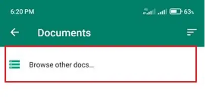
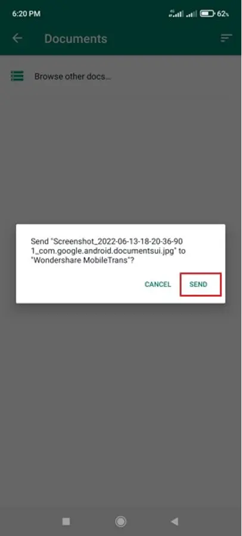
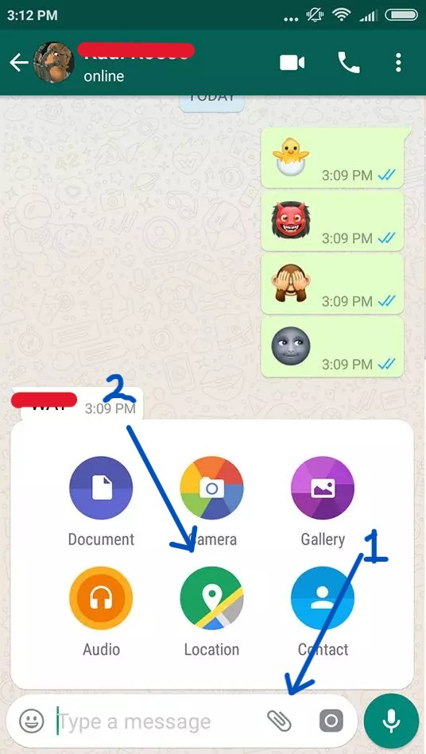

Purpose
This guide helps people use WhatsApp more effectively for sharing documents, location, and using basic features confidently.
A. How to Share a Document (PDF, Aadhaar, Photos, etc.)
-
Open the WhatsApp Chat:
Open the WhatsApp app. Tap on the contact or group you want to send to. -
Tap the Attachment Icon (📎):
At the bottom near the message box, tap the paperclip icon. -
Choose \"Document\":
Tap on \"Document\" → It will show PDF, Word files, etc. You can also tap \"Browse other docs…\". -

-
Select File and Send:
Tap the file → Tap Send. - 
- 
B. How to Share Your Location
-
Open the Chat:
Select the contact/group where you want to send your location. -
Tap on 📎 Attachment → Location:
Tap on the paperclip icon and then choose \"Location\".  -
Allow Location Access:
If it asks permission, tap \"Allow\" to let WhatsApp access your location. -
Choose Type:
Tap on \"Send Your Current Location\" or choose a nearby place.
📹 Tutorial Video (Full Steps)
Prefer watching? Here's a video walkthrough of all the steps explained above: